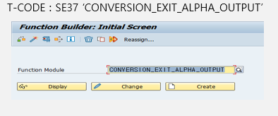

20221026 - function
Function - SE37
기능별로 모듈화하고 재사용 가능
subroutine이 local modulariation이라고 하면, function은 global modularization
function module은 function group이라고 불리는 POOL에 소속
- function group - 개발 패키지처럼 유사한 기능의 function을 모아 놓은 것
function module은 호출 프로그램에 상관없이 stand-alone 모드에서 디버깅 가능
function을 호출할 때 input 파라미터를 입력하고 function 수행 결과를 output 파라미터로 받음
CONVERSION_EXIT_ALPHA_OUTPUT


Function group 생성
function group은 여러 function module을 모아 놓은 container
- function group은 직접 실행할 수 없어 function을 호출할 때, 호출한 프로그램의 세션 안으로 function group을 전체 load
- function을 실행할 때 function이 소속된 group 내의 모든 function이 영향
- function 하나에 에러가 발생하면 동일 group 내 모든 function이 실행 불가
- function group의 이름은 26자까지
Group 생성
se31 내 메뉴 → goto → function group → create group


또 다른 group 생성

function builder (T-CODE: SE37)를 통해 function group과 function이 생성되면 시스템은 자동적으로 main program과 include program을 생성
이 때, main program의 이름은 SAPL이 function group 앞에 붙어 구성

Module 생성

attributes
- regular-function module - 일반적으로 사용하는 function module 형태
- remote-enabled module - 동일시스템에서 병렬적으로 호출되거나 다른 시스템에서 호출될 때 사용 (RFC)
- update module - 일괄적으로 데이터베이스 변경을 위한 추가적 function
- edit lock - 다른 개발자에 의해 변경이 일어나는 것을 막기 위한 설정. 체크 시, edit lock을 설정한 개발자만이 function 수정 가


IMPORT
function moudle을 호출한 ABAP 프로그램 또는 인터페이스 호출 시, 변수 값을 전달받는 목적으로 사용


- TYPE - 파라미터 타입 유형을 지정
TYPE,LIKE,TYPE REF TOTYPE REF TO는 CLASS 참조TYPE REF TO DATA,TYPE REF TO OBJECT…

- Associated type - 데이터 타입이나 참조할 특정 테이블의 필드를 지정
- default value - 파라미터의 초기값
- optional - 파라미터를 선택 사항으DU로 설정
- pass by value - 파라미터를 전달받을 때 새로운 메모리에 값을 복사
EXPORT
function module에서 값을 ABAP 프로그램으로 결과 값을 전달하는 목적 또는 인터페이스의 결과 값을 전달

Changing
function module을 호출한 ABAP 프로그램과 parameter를 동시에 주고 받음

Tables parameter
tables parameter는 하나의 값이 아닌 복수의 값
즉, internal table의 내용을 주고 받을 때 사용

Exceptions
function moudle이 실행되는 동안 exceptions parameter를 사용하면 발생하는 예외사항을 처리 가능


Source
스크립트 작성 후, 활성화하면 function module 생성 완료


DATA: LV_NUM1 TYPE I,
LV_NUM2 TYPE I,
LV_OPTIONAL TYPE C.
DATA: LV_RESULT TYPE I,
LV_MESSAGE TYPE C LENGTH 20.
LV_NUM1 = 3.
LV_NUM2 = 2.
LV_OPTIONAL = '+'.
CALL FUNCTION 'ZEDU1_001'
EXPORTING
I_NUM1 = LV_NUM1
I_NUM2 = LV_NUM2
I_OPTION = LV_OPTIONAL
IMPORTING
E_RESULT = LV_RESULT
E_MESSAGE = LV_MESSAGE
* TABLES
* T_ZEDU1_001 =
* CHANGING
* P_ZEDU1_001 =
EXCEPTIONS
DIV_ZERO = 1
OTHERS = 2.
.
IF SY-SUBRC <> 0.
WRITE:/ SY-SUBRC, 'FAILED'.
ELSE.
WRITE:/ LV_RESULT.
WRITE:/ LV_MESSAGE.
ENDIF.TEST DATA
F8 또는 실행버튼
IMPORT Parameters에 value 값으로 고정해놓은 값이 자동 입력


INPUT 값이 복잡한 데이터에 대해서는 상단에 저장버튼을 누르면 입력한 테스트 데이터를 저장 가

저장된 데이터를 호출하여 사용 가능

changing 전달에 대한 result 출력


tables 전달에 대한 result 출력


Debugging
결과값 ERROR 또는, 조회되지 않는 데이터에 대해서는 디버깅을 통해 확인가

External debugging
타 시스템에서 전달되는 인터페이스 건에 대해서는 외부 디버깅을 통해 오류 확인

USER 등록 - 상단의 utility → settings

IF I_NUM2 = 0.
RAISE DIV_ZERO.
EXIT.
ENDIF.
CASE I_OPTION.
WHEN '+'.
E_RESULT = I_NUM1 + I_NUM2.
WHEN '-'.
E_RESULT = I_NUM1 - I_NUM2.
WHEN '*'.
E_RESULT = I_NUM1 * I_NUM2.
WHEN '/'.
E_RESULT = I_NUM1 / I_NUM2.
ENDCASE.
IF P_ZEDU1_001 IS INITIAL.
SELECT * FROM ZEDU15_001 INTO CORRESPONDING FIELDS OF TABLE T_ZEDU1_001
WHERE Z_NUMBER = P_ZEDU1_001-Z_NUMBER
AND ZID = P_ZEDU1_001-ZID
AND MATNR = P_ZEDU1_001-MATNR.
IF SY-SUBRC = 0.
E_MESSAGE = 'SUCCEEDED'.
ENDIF.
ENDIF.
TABLES: ZEDU15_001.
IF T_ZEDU1_001[] IS INITIAL.
LOOP AT T_ZEDU1_001.
SELECT SINGLE * FROM ZEDU15_001
WHERE Z_NUMBER = T_ZEDU1_001-Z_NUMBER
AND ZID = T_ZEDU1_001-ZID
AND MATNR = T_ZEDU1_001-MATNR.
MODIFY T_ZEDU1_001 FROM ZEDU15_001.
ENDLOOP.
IF SY-SUBRC = 0.
E_MESSAGE = 'SUCCEEDED!'.
ENDIF.
ENDIF.In-class practice